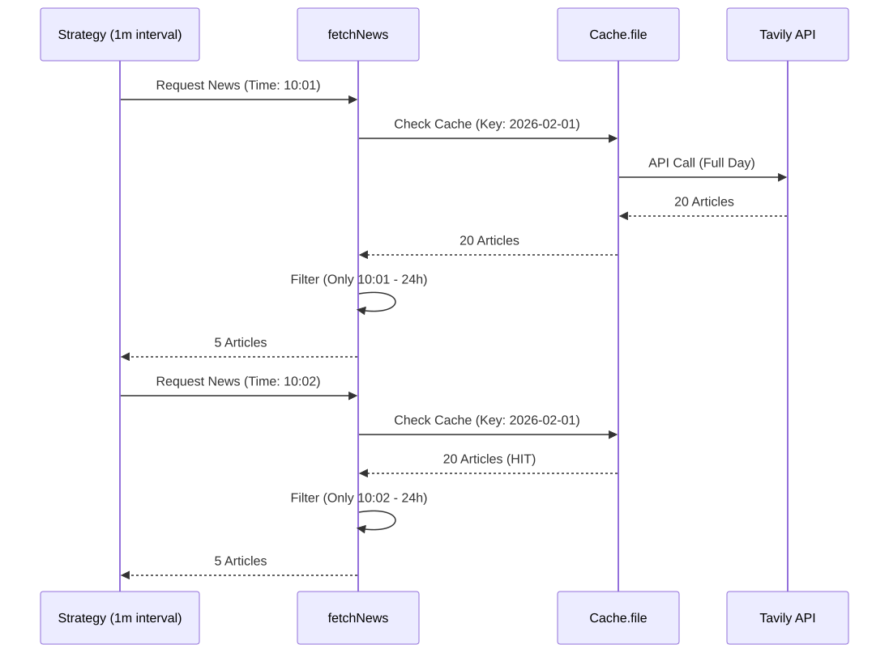

The fetchNews module serves as the primary data retrieval layer for the AI forecasting engine. It abstracts the complexity of searching for financial news, managing API rate limits via caching, and enforcing strict temporal boundaries to ensure backtest integrity.
The module integrates with the Tavily Search API to provide high-quality, filtered news content to the LLM advisors. It is designed to handle two distinct execution modes:
The news fetching process is centralized in logic/api/fetchNews.ts. It utilizes the Tavily client, which is initialized as a singleton using the TAVILY_TOKEN environment variable.
This diagram illustrates how the fetchNews function interacts with the backtest-kit state and external APIs to provide data to the forecasting logic.
"fetchNews Data Flow"

To ensure the LLM receives high-signal data, the system implements strict domain whitelisting and blacklisting.
The system prioritizes crypto-native media, regulatory bodies, and specific social platforms while excluding sources that frequently omit publication timestamps.
| Category | Domains |
|---|---|
| Crypto Media | cointelegraph.com, theblock.co, decrypt.co, blockworks.co |
| Regulators | sec.gov, federalreserve.gov, whitehouse.gov |
| Social/Personas | truthsocial.com, stocktwits.com |
| Blacklisted | coindesk.com, reuters.com, bloomberg.com, wsj.com (Missing publishedDate) |
The getDomainList function ensures that no domain exists in both lists simultaneously. Additionally, the search function rejects any result where the publishedDate is missing or defaults to 00:00 (often indicating a placeholder date).
A critical requirement for valid backtesting is the prevention of "look-ahead bias"—using information that would not have been available at the time of the trade.
The system defines a global NEWS_WINDOW_HOURS = 24. Regardless of the mode, fetchNews only returns articles published within the 24-hour window ending exactly at the current system time (getDate()).
| Feature | fetchNewsInLive |
fetchNewsInBacktest |
|---|---|---|
| Time Range | Last 48 hours (buffer for filtering) | +/- 1 day from alignToInterval(when, "1d") |
| Caching | None (always fresh) | Cache.file (persisted to disk) |
| Cache Key | N/A | symbol_topic_alignMs_query |
| API Frequency | Every call | Once per daily candle open |
The fetchNewsInBacktest function uses Cache.file from the backtest-kit. This is vital because a 1-minute backtest for one month would otherwise trigger ~43,000 API calls. By aligning the cache to 1d (one day), the system fetches a "daily batch" of news and stores it locally.
"Backtest Cache Resolution"

The module relies on a global dayjs configuration defined in logic/config/setup.ts, which enables UTC support and Russian locale formatting for LLM-friendly date strings.
The search function configures the Tavily client with specific parameters:
topic: "news": Restricts search to news indices.searchDepth: "advanced": Enables more thorough crawling.maxResults: 20: Limits the volume of data per query to maintain LLM context window limits.